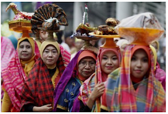
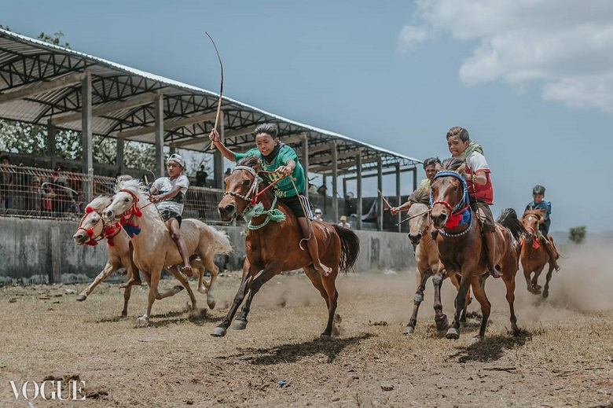
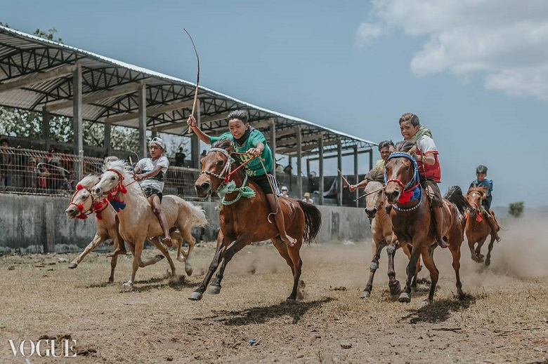

Ketika Madura memiliki tradisi karapan sapi dan Sumatra Barat mempunyai tradisi pacu jawi, tak ketinggalan Pulau Sumbawa juga memiliki barapan kebo yang menjadi kebanggaan masyarakatnya. Barapan kebo dilaksanakan di area sawah basah dan berlumpur, tugas utama para joki adalah mengambil saka yaitu tongkat kayu yang ditancapkan di salah satu sudut sawah dalam waktu sesingkat – singkatnya. Yang berhasil mendapatkannya dialah pemenangnya. Para peserta tidak mengincar hadiah yang diberikan, barapan kebo lebih menjadi arena pertaruhan harga diri dan martabat. Selain itu juga kerbau yang berhasil jadi juara bisa dijual dengan harga yang sangat tinggi.
Upacara Nyorong merupakan salah satu bagian dari prosesi pernikahan putra – putri Sumbawa, Nusa Tenggara Barat yang merupakan upacara mengantar barang – barang dari pihak keluarga calon pengantin laki – laki ke tempat calon pengantin perempuan. Biasanya barang – barang yang diantar berupa: bahan makanan pokok, bahan pembuat kue, ternak, pakaian, serta tempat tidur. Barang – barang tersebut diantarkan beramai – ramai dan dipimpin oleh tokoh masyarakat atau tokoh agama. Selain itu juga Upacara Nyorong dijadikan sebagai acara silaturahmi antara kedua pihak keluarga pengantin.
 

Kalau barapan kebo dilakukan pada saat awal musim tanam, maka Main Jaran dulunya diadakan ketika musim mulai kemarau. Tapi sekarang diadakan tidak harus di musim kemarau karena event main jaran sudah masuk ke dalam event-event Pariwisata Sumbawa dan diSupport oleh banyak pihak termasuk pemerintah. Arena Main Jaran juga semakin tertata dengan baik dan rapi. Hanya saja pesan aku buat kalian yang akan menonton Main jaran jangan lupa siapkan sunblock atau jaket karena cuaca biasanya panas menyengat. Pilih posisi duduk di tribun penonton yang nyaman dan siapkan kameramu. Uniknya lagi main Jaran di Sumbawa memakai Joki cilik, jokinya adalah anak-anak kecil usia 4 -7 tahun. Jangan salah mereka memiliki ketangguhan dan keberanian yang kita sendiri belum tentu punya. Lepas dari pro dan kontra joki cilik, Main Jaran adalah permainan yang seru untuk diikuti.